|
|

|

|
|
In this project, I built a path tracer step by step, starting from basic camera ray generation and primitive intersection, then accelerating traversal with a BVH, adding direct illumination, extending the renderer to recursive global illumination with multiple bounces and Russian Roulette, and finally improving efficiency with adaptive sampling. The experiments in each part were designed not only to verify correctness, but also to show how each component affects image quality, noise, and rendering time.
What I found especially enjoyable in this project was watching the renderer gradually become more complete. It felt genuinely fun to see the image improve one piece at a time: first geometry, then direct lighting, then multiple bounces, and finally adaptive sampling. In particular, it was very interesting to see the effect of indirect illumination so directly in the experiments. Comparing direct-only, indirect-only, and different bounce depths made interreflection much more intuitive to me than just reading the rendering equation on slides. Overall, this project turned a basic ray-scene intersection program into a practical Monte Carlo path tracer and made the connection between light transport theory and the final rendered image much clearer.
For each pixel, I generated multiple camera rays in raytrace_pixel. I sampled random positions inside the pixel using the grid sampler, converted each sample into normalized image coordinates by dividing by the image width and height, and then passed those coordinates into camera->generate_ray. In generate_ray, I shifted the normalized coordinates by 0.5 so that the image range [0, 1] became [-0.5, 0.5], then scaled them by 2 * tan(fov / 2) to map the sample onto the virtual sensor plane at z = -1. This produced a ray direction in camera space. I normalized that direction, transformed it into world space using the camera-to-world basis stored in c2w, and created a ray starting from the camera position. I also initialized the ray interval using nClip and fClip.
After that, each ray was passed to est_radiance_global_illumination. At this stage of the project, that function is still used mainly for debugging, so the rendered result comes from surface normals rather than full lighting. To produce those normals correctly, the ray has to intersect scene primitives. I implemented intersection tests for both triangles and spheres. For triangles, I used Möller–Trumbore intersection to solve directly for the hit distance and barycentric coordinates. For spheres, I solved the quadratic equation from substituting the ray equation into the sphere equation and selected the closest valid root. In both cases, once a valid hit was found, I updated the ray’s max_t so that farther intersections along the same ray would be ignored. The nearest valid hit was then used to compute the normal shading result stored in the sample buffer.
For triangle intersection, I implemented the Möller–Trumbore algorithm. I first formed the two edge vectors of the triangle, then used cross products and dot products to solve for three unknowns at once: the ray parameter t and the two barycentric coordinates. This method is convenient because it tests the actual triangle directly, instead of first intersecting the ray with the plane and then doing a separate inside-outside test.
Once I computed the candidate values, I checked whether the intersection was valid. The barycentric coordinates both needed to be nonnegative, and their sum needed to be at most 1, which guarantees that the hit point lies inside the triangle. I also checked that the corresponding t-value was between min_t and max_t. If any of these conditions failed, I rejected the intersection.
For the full intersect function, after accepting a valid hit, I stored the hit time, the primitive pointer, and the BSDF pointer in the intersection record. I then used the barycentric coordinates to interpolate the three vertex normals, which produced smooth normal shading instead of a single flat face normal. Finally, I updated the ray’s max_t to the current hit distance so that later tests on the same ray would only keep something closer.
|
|
|
|
|
|
I constructed the BVH recursively over a contiguous range of primitives. For each recursive call, I first computed the bounding box of all primitives in the current range and used it to create the current BVH node. If the number of primitives in that range was at most the maximum leaf size, I stopped the recursion and made the node a leaf by storing the corresponding iterator range. Otherwise, I needed to split the primitives into two smaller groups and build the left and right subtrees recursively.
To choose the split, I also computed the bounding box of the centroids of the primitives’ bounding boxes. I then selected the axis with the largest centroid extent, since that is the direction along which the primitives are spread out the most. After choosing that axis, I used the midpoint of the centroid bounding box along that axis as the splitting point. Primitives whose centroids lay on one side of the split were placed in the left group, and the rest were placed in the right group. This heuristic is simple and efficient, and it usually produces a reasonably balanced tree while still grouping nearby primitives together in space.
One edge case is that all centroids may fall on the same side of the split, which would cause the recursion to fail to shrink the problem size. To avoid this, I used a fallback that forces a median split when the partition becomes degenerate. This guarantees progress and prevents infinite recursion. Overall, the BVH organizes primitives into a hierarchy of bounding boxes so that rays can quickly reject large parts of the scene without testing every triangle individually.
For bounding-box intersection, I implemented the standard slab test in BBox::intersect. For each axis, I computed the entry and exit times of the ray with the corresponding box slabs, handled near-parallel rays by checking whether the ray origin already lies inside the slab, and progressively updated the valid interval [t0, t1]. If the interval ever became empty, the ray could not intersect the box. During BVH traversal, I first tested the ray against the current node’s bounding box. If the box was missed, I immediately returned false. If the node was a leaf, I tested the ray against all primitives in that leaf. Otherwise, I recursively traversed the left and right children. In the has_intersection version I used short-circuiting, while in the full intersect version I visited both children so that the closest hit could be recorded through the primitive intersection routine.

|

|
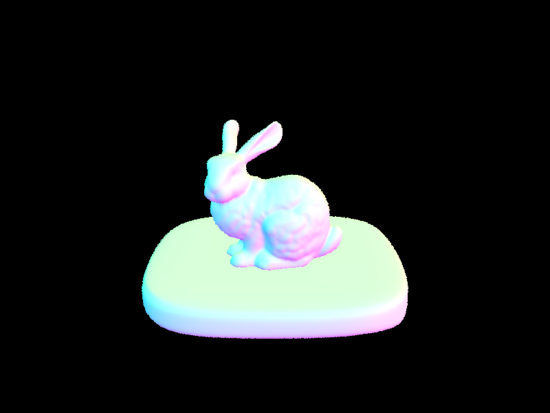 |
| Scene | Without BVH (s) | With BVH (s) | Speedup |
|---|---|---|---|
| banana.dae | 4.8491s | 0.1464s | 33.1223x |
| cow.dae | 23.6294s | 0.2320s | 101.8509x |
| CBbunny.dae | 584.5095s | 0.2543s | 2299.23x |
The timing results show that BVH acceleration significantly reduces rendering time, especially for scenes with large numbers of triangles. Without BVH, each ray may need to test against essentially every primitive in the scene, so render time grows quickly as scene complexity increases. With BVH, many primitives can be discarded early by first intersecting the ray with bounding boxes, so the number of expensive primitive intersection tests drops substantially. The improvement becomes more dramatic on more complex meshes such as banana.dae cow.dae and CBbunny.dae, where brute-force traversal is much more costly. In other words, BVH does not change the final rendered appearance, but it makes the same normal-shaded result far more practical to compute.
I implemented direct illumination in two different ways: uniform hemisphere sampling and light sampling through importance sampling. In both implementations, I first constructed a local coordinate frame at the hit point using the surface normal, so that the normal becomes the local +z direction. This let me evaluate the BSDF in object space while still tracing rays in world space. I also computed the hit point in world coordinates and converted the outgoing viewing direction into the local frame, since the BSDF expects both incoming and outgoing directions in local coordinates.
For the uniform hemisphere implementation, I estimated the direct lighting integral by sampling directions uniformly over the hemisphere above the surface. For each sampled direction, I transformed it from local space to world space, cast a shadow ray from the hit point, and checked whether that ray hit an emissive surface. If it did, I used the emission of that surface as the incoming radiance from that direction. I then accumulated the Monte Carlo estimator using the diffuse BSDF value, the cosine term, and the uniform hemisphere PDF. After all samples were processed, I averaged the result over the total number of samples. In my implementation, the total sample count is the number of lights multiplied by the number of samples per area light, so that the sampling budget is comparable to the light-sampling implementation.
For the light-sampling implementation, instead of sampling arbitrary directions in the hemisphere, I sampled directions directly from each light source. For every light in the scene, I took either one sample for delta lights or multiple samples for area lights. Each sampled light direction was returned in world space together with the distance to the light and the corresponding PDF. I converted the sampled direction back into the local frame for BSDF evaluation, skipped samples below the surface, and cast a shadow ray toward the sampled light point. This shadow ray used a small epsilon offset as its minimum distance and the sampled distance to the light minus epsilon as its maximum distance, so that only blockers between the surface and the light counted as occlusion. If the shadow ray did not hit anything, I added the contribution from that light sample using the BSDF, the cosine term, the sampled incoming radiance, and the light PDF, and then averaged over the samples for that light. Summing over all lights gave the final direct lighting estimate.
I connected both implementations through the one-bounce radiance wrapper. The renderer chooses between the two estimators depending on whether direct hemisphere sampling is enabled. The final radiance returned for Part 3 is the sum of zero-bounce radiance, which makes emissive surfaces visible when viewed directly, and one-bounce radiance, which accounts for direct lighting reflected from non-emissive surfaces.
| Uniform Hemisphere Sampling | Light Sampling |
|---|---|

|

|
|
|
|

|

|

|

|

|
|
I used bench.dae for this comparison because it contains an area light and produces clearly visible soft shadows. In all four renders, I fixed the image sampling rate at 1 sample per pixel and changed only the number of light samples. With 1 light ray, noise is visible almost everywhere on the chair, including the seat, the back, and the darker wall and floor regions, but it is especially obvious around tight corners and the narrow waist-like region where geometry and shadow meet. The soft shadow under the chair also looks very blotchy and unstable. With 4 light rays, the overall lighting becomes more coherent, but there is still clear grain in the shadow boundary and around the corners. At 16 light rays, the penumbra becomes smoother and the shape of the chair is easier to read, although some noise still remains in the darker regions. With 64 light rays, the image is much cleaner and more stable overall: the chair looks clearer, the soft shadow is smoother, and even the corner and waist regions that were heavily speckled at 1 light ray become much easier to see with little visible noise. Under the same 1-spp pixel budget, the 64-light-ray render also looks brighter and more complete because the direct-light estimate is much less noisy.
Uniform hemisphere sampling and light sampling both estimate the same direct illumination integral, but in practice their efficiency is very different. In the hemisphere estimator, samples are spread over the entire hemisphere above the surface, so many of them do not point toward any light source and therefore contribute nothing. This leads to much higher variance, so under the same sampling budget the images look noisier, less stable, and often darker. In contrast, light sampling draws directions directly from the scene lights, so a much larger fraction of samples contribute useful energy. As a result, light sampling produces cleaner soft shadows, lower noise, and in finite-sample renders often appears brighter and more complete. The timing data also shows that light sampling is more efficient in practice: it reaches a visually stable result faster because it wastes fewer samples on directions that do not contribute direct illumination.
| Scene | Uniform Hemisphere Sampling (s) | Light Sampling (s) | Speedup |
|---|---|---|---|
| CBbunny.dae | 3.6161s | 1.9521s | 1.8524x |
| CBempty.dae | 3.7397s | 0.6863s | 5.4491x |
| CBspheres_lambertian.dae | 3.0793s | 2.0858s | 1.4763x |
Using the same rendering parameters, light sampling was faster than uniform hemisphere sampling on all three scenes. The difference was especially large for CBempty.dae, where light sampling achieved more than a 5x speedup. This matches the behavior seen in the rendered images: hemisphere sampling wastes many samples on directions that do not contribute direct light, while light sampling draws samples directly from the lights and therefore uses its sample budget much more efficiently. In practice, this means light sampling not only produces cleaner and more stable direct illumination, but also reaches a useful result more quickly.
I implemented global illumination by combining three pieces: zero-bounce emission, one-bounce direct lighting, and recursively estimated indirect lighting. For the diffuse BSDF sampling step, I used the cosine-weighted hemisphere sampler provided by the starter code. In DiffuseBSDF::sample_f, I sample an incoming direction wi in the local object frame, write both the sampled direction and its pdf through the pointer arguments, and return the Lambertian BRDF value for that sample. Since the path tracer traces inverse paths from the camera into the scene, wo is the outgoing direction toward the camera, while the sampled wi represents a direction from which light may have arrived at the surface.
In est_radiance_global_illumination, I first intersect the ray with the BVH. If the ray misses, I return the environment light when one exists, or black otherwise. If the ray hits a surface, I first add the zero-bounce term from zero_bounce_radiance, which is just the surface emission. Then, if the ray still has positive depth, I call at_least_one_bounce_radiance to estimate the rest of the lighting.
The main recursion happens in at_least_one_bounce_radiance. I build a local coordinate frame whose z-axis is aligned with the surface normal, compute the hit point, and convert the outgoing ray direction into local coordinates as w_out. If the remaining depth is zero, I return black. Otherwise, when isAccumBounces is true, or when the current ray is at its last remaining bounce, I include the one-bounce direct lighting term from one_bounce_radiance. This design lets the same function support both accumulated and unaccumulated bounce visualizations.
To continue the path, I sample a new incoming direction wi from the BSDF, reject invalid samples with nonpositive pdf or directions below the surface, transform the sampled direction back into world coordinates, and spawn a new ray from the hit point with an EPS_F offset to avoid self-intersection. The new ray depth is decreased by one. If this new ray hits another surface, I recursively evaluate radiance there and multiply the returned value by the usual Monte Carlo weight
f(w_out, w_i) * L_next * cos(theta) / pdf.
I also added Russian Roulette to reduce the cost of tracing very long paths. In my implementation, I always allow at least one indirect bounce when indirect lighting is enabled, and only apply random termination after that. I use a continuation probability of 0.7. If a path survives, I divide its recursive contribution by this continuation probability, which keeps the estimator unbiased in expectation. When isAccumBounces is false, I overwrite the current output with only the recursive indirect contribution instead of summing it with the current direct term, which isolates the contribution of a specific bounce depth.

|

|
These images include both direct and indirect illumination. Compared with direct-light-only rendering, the full GI result has softer shading, more realistic dark regions, and visible interreflection inside the Cornell box. In particular, the side walls do not only receive light from the ceiling source; they also reflect colored light back into the scene. This produces subtle red and blue color bleeding on nearby surfaces and prevents the shadowed parts of the geometry from collapsing into flat black regions.

|

|
To generate these two views, I temporarily modified at_least_one_bounce_radiance in two ways. For the direct-only render, I returned only one_bounce_radiance, so the path tracer kept the direct lighting term and removed all recursive indirect transport. For the indirect-only render, I removed the direct term at the current visible hit point and kept only the recursively transported contribution from deeper bounces.
The direct-only image already captures the main geometry, the contact shadow under the bunny, and the overall Cornell box structure. In this view, the upper part of the bunny and the floor region directly under the ceiling light are strongly illuminated, since they are reached most directly by the light source. At the same time, regions that are blocked from direct light, especially the ceiling and the lower half of the bunny, remain almost completely dark. This makes the image look harsher and less natural. The indirect-only image shows almost the opposite behavior. Areas that were brightest in the direct-only render, such as the directly lit floor and the upper part of the bunny, now become some of the darkest regions, while the ceiling and the lower half of the bunny become clearly visible because they are lit by bounced light. The whole room is also filled with a soft, fairly uniform dim glow, which makes the result much gentler and is characteristic of indirect illumination. Color bleeding is easy to see as well: the left side of the back wall is noticeably tinted red, while the right side is tinted blue, showing that indirect light carries the color of the side walls throughout the box. The final global illumination image looks convincing because it combines the strong structure of direct lighting with the softer fill light and color transport provided by indirect illumination.

|

|

|

|

|

|
With isAccumBounces = false, each image isolates the contribution of a single bounce level rather than summing all previous ones. At m = 0, only emitted light is visible, so the image is almost entirely black except for the ceiling light. At m = 1, we see the direct illumination term, which is enough to reveal the bunny and the Cornell box layout. Starting from m = 2, the contribution becomes weaker than direct lighting, since light now has to reflect off another diffuse surface before reaching the visible point.
The second bounce is the first place where clear indirect illumination appears on the bunny itself. In this image, the lower half of the bunny is noticeably lit up, even though that region is not reached as strongly by direct light. We can also see color from the red and blue side walls being reflected back onto the bunny, together with white light from the floor. Even the ceiling becomes visibly illuminated, which shows that light has already started bouncing around the box instead of traveling only directly from the light source. At m = 3, the result is dimmer and more diffuse, but it has a very characteristic faint glow that clearly looks like light that has been reflected multiple times. For example, the floor remains relatively visible, which suggests that some of the light reflected upward in the m = 2 case is bouncing back down again after reaching other surfaces such as the ceiling. This higher-order transport is weaker, but it further softens the scene and spreads energy into regions that direct lighting alone cannot explain. By m = 4 and m = 5, the isolated contribution is still present, but it is much smaller than the first few bounces. This is exactly the kind of transport that makes path tracing look different from rasterization: repeated diffuse reflections create soft fill light and color exchange that simple direct-light rendering does not naturally capture.
| Unaccumulated bounces | ||
|---|---|---|
|
|
|
|
|
|
|
|
| Accumulated bounces | ||
|---|---|---|

|

|

|

|

|

|
The difference between these two modes is structural. The unaccumulated images isolate a single bounce level, so after m = 1 they quickly become dim, since each higher-order bounce by itself carries only a limited amount of energy. The accumulated images instead sum all contributions up to the chosen depth, so they become progressively closer to the final render as more bounce levels are included.
In the accumulated sequence, m = 0 again shows only emission, and m = 1 corresponds to direct illumination only. The largest visual change occurs when moving from m = 1 to m = 2, because this is where the first indirect diffuse interreflection enters the image. The most noticeable change is not just a general brightening, but that regions that direct light does not reach well suddenly become illuminated. In particular, the lower half of the bunny becomes much less dark, and the ceiling also becomes visibly brighter. These are strong signs that bounced light is now filling in parts of the scene that were previously missing energy. The floor also receives extra light, and color bleeding from the red and blue walls becomes clearly visible. Moving from m = 2 to m = 3 still improves the result, but the change is smaller. At that point the effect appears more as softer dark regions, smoother transitions, and slightly richer indirect shading rather than a dramatic structural difference. By m = 4 and m = 5, the images are already very close to convergence, which shows that most of the visually important energy has already been captured by the first few bounces.

|

|

|

|

|

|
In the final version of the renderer, I used Russian Roulette inside at_least_one_bounce_radiance so that paths can terminate randomly instead of always marching all the way to a fixed large depth. In my implementation, the first indirect bounce is always taken when indirect lighting is enabled, and the random continuation test starts only after that. When a path survives, I divide the contribution by the continuation probability, so the estimator remains unbiased in expectation.
The image sequence shows that increasing the maximum depth matters a lot at small depths and much less at large ones. At m = 0, the image contains only emitted light. At m = 1, it contains direct lighting only. The jump to m = 2 is the most important, because the first indirect bounce adds the main interreflection effects: indirect fill light, color bleeding, and illumination in regions such as the lower half of the bunny and the ceiling that are not strongly reached by direct light alone. Moving to m = 3 and m = 4 still improves the image, but the changes are smaller and mainly appear as more subtle indirect fill. By m = 100, the image is visually very close to m = 4. In fact, this looks very similar to the accumulated-bounce comparison above: after the first few bounces, the scene is already close to its final appearance, and extra depth changes the image only slightly. This matches the physical intuition for a diffuse Cornell box: each extra bounce contributes less energy than the previous one, so very long paths exist but matter less. Russian Roulette is useful here because it preserves the possibility of long paths without forcing every sample to pay the full cost of tracing them.

|

|

|

|

|

|

|
||
In this experiment, I fixed the number of light samples at 4 and varied only the samples per pixel. This isolates the effect of Monte Carlo variance from path sampling at the pixel level. At 1 and 2 spp, the image is dominated by noise, and the bunny, the walls, and the ceiling all show strong grain. At 4 and 8 spp, the global structure of the scene is already clear, but the estimate is still unstable, especially in the darker regions. At 16 spp, the image becomes noticeably more usable, and by 64 spp most of the large fluctuations have been averaged out. The 1024 spp render is much cleaner and is close to the converged appearance.
The spatial distribution of the noise is also meaningful. Bright directly lit regions converge relatively quickly, while darker regions influenced more by indirect transport converge more slowly. This is expected, because indirect lighting is estimated recursively and therefore has higher variance than the direct term. Increasing spp reduces this variance by averaging more independent path samples per pixel, so the image gradually transitions from a noisy Monte Carlo estimate to a stable global illumination render.
Adaptive sampling improves rendering efficiency by avoiding the use of a fixed large number of samples for every pixel. In Monte Carlo path tracing, different parts of an image converge at very different rates. Smooth and uniformly lit regions usually stabilize quickly, while geometric edges, shadow boundaries, and other high-variance regions require many more samples before the noise becomes acceptable. Instead of forcing every pixel to use the same sample count, adaptive sampling estimates convergence on a per-pixel basis and stops sampling early once a pixel is sufficiently stable. This concentrates computation on the difficult regions of the image and reduces wasted work on easy ones.
In my implementation, I modified PathTracer::raytrace_pixel() so that each pixel still traces up to ns_aa samples, but it may terminate earlier if the pixel appears to have converged. For each sample, I generated a sub-pixel location using the grid sampler, converted it to normalized image coordinates, generated a camera ray, set the ray depth to max_ray_depth, and evaluated its radiance using est_radiance_global_illumination(). I accumulated the full radiance sum for the final pixel color, but for the adaptive stopping test I used the scalar illuminance of each sample. Specifically, I maintained two running statistics: the sum of illuminances and the sum of squared illuminances. This allowed me to compute the sample mean and variance without storing all previous samples explicitly.
Rather than testing for convergence after every single sample, I checked only once every batch of samples. The batch size is controlled by samplesPerBatch; if it is not set, the code falls back to checking only at the end. Whenever a batch boundary was reached, I computed the current mean illuminance, estimated the sample variance, and then formed the confidence interval quantity I = 1.96 * sigma / sqrt(n). The factor 1.96 corresponds to a 95% confidence interval. If this interval was small enough relative to the mean, namely if I <= maxTolerance * mu, I treated the pixel as converged and stopped tracing more rays for that pixel. After termination, I divided the accumulated radiance by the actual number of samples used and stored that count in sampleCountBuffer. This is what makes the sample-rate visualization possible: pixels that converged quickly are shown with lower sampling rates, while harder pixels that required more work are shown with higher ones.

|

|

|

|
I rendered both scenes with adaptive sampling enabled, using a maximum of 2048 samples per pixel, 1 sample per light, and a maximum ray depth of at least 5. In both sample-rate images, red indicates regions that required more samples while blue indicates regions that converged with fewer samples. This pattern matches the visual complexity of the scenes very well.
In CBbunny.dae, the large flat regions of the walls and floor are mostly blue because their lighting varies smoothly and they converge quickly. In contrast, the bunny silhouette, the ears, the contact region where the bunny meets the floor, and the shadow boundaries beneath the model are much warmer in color, indicating that they required more samples. These are exactly the places where visibility changes rapidly, indirect light varies more strongly, and Monte Carlo variance is higher. The region around the ceiling light also receives a higher sampling rate because illumination changes more abruptly there than on the smooth wall interiors.
The same behavior appears in CBspheres_lambertian.dae. The broad empty wall and floor regions converge quickly and remain blue, while the sphere boundaries, the contact shadows under the spheres, and the penumbra regions on the floor receive significantly more samples. The right sphere in particular shows a large high-sample region because its shading changes more sharply across the visible surface and the nearby shadowed region is harder to estimate cleanly. Overall, the sample-rate images show that the adaptive sampler is working as intended: it spends most of its effort on object boundaries, shadow transitions, and other high-variance regions, while reducing work on smooth low-variance areas.
The source code for this part is back up at ./photon _mapping(for extra point)/hw3-pathtracer-oliveira3-photon/ and in another branch
The main advanced rendering technique I implemented is photon mapping. Photon mapping is a two-pass global illumination algorithm. In the first pass, photons are emitted from the scene lights and traced through the scene. When a photon reaches a suitable surface, the renderer stores information about that interaction, including the photon position, incoming direction, power, and surface normal. In the second pass, the scene is rendered from the camera as usual, but part of the indirect illumination is estimated by gathering photons near each visible shading point.
The motivation behind photon mapping is that indirect illumination can be difficult to discover efficiently using only recursive Monte Carlo path tracing. The photon pass precomputes a sparse representation of how light energy moves through the scene, and the camera pass later reuses that information through local density estimation. In my implementation, the photon estimate is used only for indirect diffuse illumination, while zero-bounce emission and direct lighting are still handled by the original Project 3 path-tracing pipeline.
I also implemented a kd-tree acceleration structure for the photon map. This kd-tree is not a replacement for the scene BVH. The baseline renderer still uses the BVH for scene-ray intersection. The kd-tree only accelerates photon gathering by reducing the cost of nearby-photon radius queries once the photon map has already been built.
I implemented photon mapping as an extension of my existing Project 3 path tracer rather than as a separate renderer. I kept the original zero-bounce emission, direct-lighting, and recursive indirect path-tracing structure, and inserted photon mapping only around the indirect diffuse part of the estimator. This let me reuse the existing BVH, ray, intersection, BSDF, and light infrastructure instead of rebuilding the renderer from scratch.
The first step was adding a photon data structure and a photon map container. Each photon stores its position, incoming direction, power, and the surface normal at the storage point. Before any camera rays are traced, the renderer now performs a photon build pass. In this pass, it scans the scene lights, selects supported emitters, launches a target number of photons, and traces them through the scene. In my implementation, photon emission currently supports point lights and area lights, which is sufficient for the Cornell Box scenes used in the experiments.
During photon tracing, the renderer recursively intersects each photon ray with the scene and updates the photon power using the usual throughput term involving the BSDF value, cosine factor, and sampling PDF. I terminate photon paths using Russian roulette. I do not store direct photons, because direct illumination is already handled by the original one-bounce direct-lighting estimator. Instead, I store photons only after at least one bounce, and only when they land on diffuse receivers. Because of this conservative storage rule, the number of stored photons is much smaller than the number of emitted photons. For example, in the normal configuration 65,536 photons are launched, but only around two thousand are stored in the final map, because direct photons are excluded, only diffuse receivers are accepted, and many paths terminate by miss events, emissive hits, or Russian roulette.
I also changed photon tracing so that photons are not immediately absorbed when they hit non-diffuse materials. They may continue through mirror, glass, or other sampled BSDF interactions, but they are still only stored when they eventually land on diffuse surfaces. This preserves the intended role of the photon map in my implementation: storing indirect illumination primarily for diffuse gathering.
During the camera pass, the renderer preserves the original direct-lighting path and uses photon mapping only for indirect diffuse illumination. At a diffuse shading point, the renderer gathers nearby photons and estimates radiance using a density-estimation style formula. To make the estimate more stable, I do not simply average all photons inside a fixed radius. I filter candidates by surface-normal consistency, same-side direction checks, and a local plane-distance test. In the current code, I require at least six accepted photons before trusting the estimate, and I keep at most the nearest 24 accepted photons for the final density calculation. If too few photons remain after filtering, the renderer falls back to recursive path tracing. If the photon estimate is only partially reliable, I blend the photon estimate with the recursive path-traced result instead of hard-switching between them.
For photon gathering, I implemented two query modes. The first is a simple linear scan over the stored photon vector. The second is a balanced kd-tree built over the photon positions after the photon build pass finishes. The kd-tree uses median splits along the dominant axis of the current photon subset, and photon gathering performs recursive radius queries against this tree. I exposed this choice through a command-line flag so that I could directly compare linear-scan gathering and kd-tree gathering under exactly the same photon-mapping parameters.
I also completed several supporting renderer components that were necessary to make the comparisons meaningful. In particular, I implemented the missing advanced BSDF pieces for mirror, refraction, glass, and microfacet materials, because some Cornell Box comparison scenes depend on those materials. I also integrated Russian roulette into the recursive indirect path-tracing branch so that the fallback path tracer and the baseline Project 3 integrator behave consistently.
In addition to the algorithmic changes, I extended the launcher GUI so that photon-mapping experiments could be controlled without relying entirely on command-line arguments. The GUI now includes controls for enabling photon mapping, choosing the total photon count, setting the gather radius, setting the photon bounce limit, and switching between linear-scan and kd-tree photon queries. I would describe this as support tooling for the extra-credit experiments rather than as a full interactive live-update redesign, but it made the parameter studies much easier to run and repeat consistently.
I designed the experiments around three variables: photon query structure, rendering configuration, and scene. The photon query structure had two settings: linear scan and kd-tree. The rendering configuration had four settings: the baseline Project 3 path tracer, photon mapping with a recommended setting, photon mapping with a reduced photon count, and photon mapping with a larger gather radius. The scene variable used three Cornell Box scenes: CBbunny, CBlucy, and CBdragon.
One important detail is that the baseline path tracer does not use the photon map at all. Because of that, there is no meaningful “baseline with linear scan” versus “baseline with kd-tree” distinction. The kd-tree only matters when photon mapping is enabled. For that reason, the final experiment matrix contains 21 primary renders rather than 24: each of the three scenes has one baseline image plus six photon-mapping images corresponding to three parameter settings crossed with two photon-query modes.
Unless otherwise noted, all renders used the same main rendering settings: 8 threads, 256 camera samples per pixel, 4 light samples, maximum ray depth 5, and output resolution 320 by 240. For photon mapping, I used three parameter settings: a normal setting of 65,536 photons with gather radius 0.10, a low-photon setting of 16,384 photons with gather radius 0.10, and a large-radius setting of 65,536 photons with gather radius 0.20. The kd-tree experiments used the same photon parameters as the linear-scan experiments so that the only difference was the photon query structure.
| Baseline | Linear Normal | Linear LowN | Linear BigR |
|---|---|---|---|
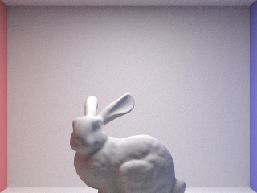 |
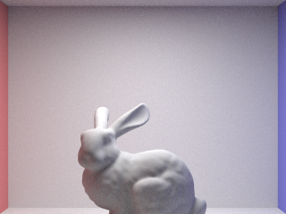 |
||
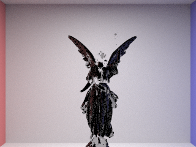 |
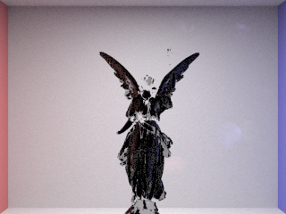 |
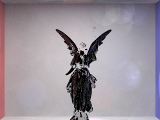 |
|
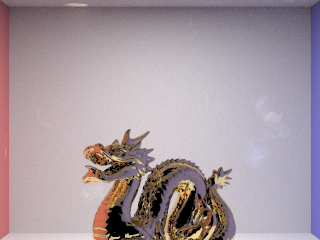 |
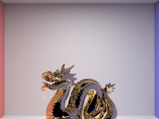 |
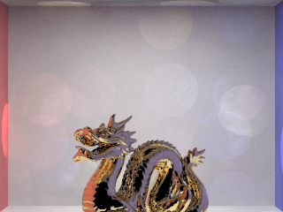 |
| Baseline | KD Normal | KD LowN | KD BigR |
|---|---|---|---|
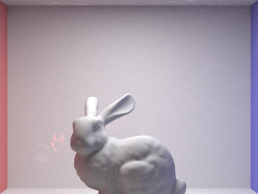 |
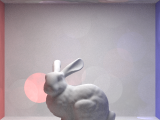 |
||
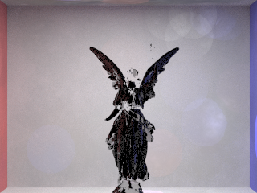 |
|||
Across all three scenes, the baseline and photon-mapped renders preserve the same large-scale structure. The Cornell Box layout, object silhouettes, and overall illumination balance remain recognizable. This is clearest in CBbunny and CBlucy, where the normal photon-mapping setting stays visually close to the baseline. That is the main success criterion for this implementation: the photon map changes how indirect diffuse illumination is estimated, but it does not destroy the overall appearance of the original renderer.
The low-photon setting usually looks more conservative. In several images it appears slightly closer to the baseline than the normal photon setting does. However, this is mostly because the photon estimator becomes too sparse and the renderer falls back more often to recursive path tracing. In other words, the low-photon results can look safer not because the photon map is stronger, but because the photon map is contributing less.
The large-radius setting consistently shows the clearest artifacts. In CBbunny, the walls and ceiling develop larger translucent circular blotches, and the indirect lighting becomes more blurred. Similar behavior appears in CBlucy and CBdragon as well. This matches the usual density-estimation tradeoff: a larger gather radius makes the estimate more stable, but it also washes out local detail and increases visible spatial averaging artifacts.
Comparing linear-scan photon mapping and kd-tree photon mapping, the images are effectively the same for the same photon parameters. This is exactly what I would expect. The kd-tree changes how nearby photons are found, but it does not change which photons are stored, how candidates are filtered, or how radiance is computed once the nearby set has been identified. In this project, the kd-tree is a performance optimization rather than a quality change.
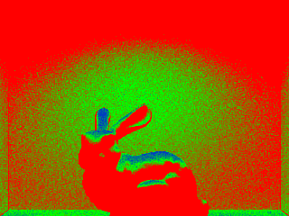 |
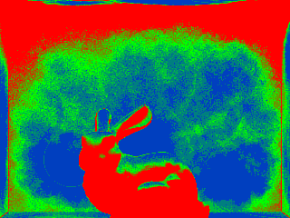 |
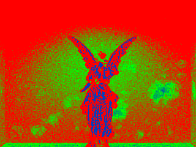 |
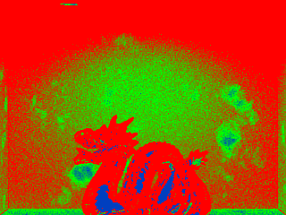 |
I do not treat the sample-rate images as the main evidence for photon mapping, but they are useful for explaining where the renderer is still unstable. In the baseline rate images, the adaptive sampler focuses mainly on geometric silhouettes and other sharp image features. In the photon-mapped rate images, those regions remain important, but additional high-sample regions appear where the faint photon-related wall artifacts occur. This is especially noticeable in the larger-radius settings. These images are helpful because they show that the remaining artifacts are not only visible to the eye, but are also detected by the adaptive sampler as higher-variance regions.
| Scene | Configuration | Query Mode | Photon Build (s) | Render Time (s) | Stored Photons | Hit Rate | Avg. Photons / Query |
|---|---|---|---|---|---|---|---|
| CBbunny | Baseline | N/A | N/A | 25.2761 | N/A | N/A | N/A |
| CBbunny | Normal | Linear | 0.0717 | 66.4687 | 2213 | 92.8% | 3.45 |
| CBbunny | LowN | Linear | 0.0172 | 34.1351 | 564 | 54.4% | 0.87 |
| CBbunny | BigR | Linear | 0.0796 | 44.2315 | 2213 | 97.7% | 11.06 |
| CBbunny | Normal | KD-Tree | 0.0711 | 36.0601 | 2213 | 92.8% | 3.45 |
| CBbunny | LowN | KD-Tree | 0.0235 | 30.5964 | 564 | 54.4% | 0.87 |
| CBbunny | BigR | KD-Tree | 0.0739 | 29.9157 | 2213 | 97.7% | 11.06 |
| CBlucy | Baseline | N/A | N/A | 41.1299 | N/A | N/A | N/A |
| CBlucy | Normal | Linear | 0.1075 | 93.4634 | 1963 | 93.6% | 3.76 |
| CBlucy | LowN | Linear | 0.0305 | 53.3392 | 485 | 57.8% | 0.92 |
| CBlucy | BigR | Linear | 0.1348 | 50.5829 | 1963 | 99.6% | 12.70 |
| CBlucy | Normal | KD-Tree | 0.1341 | 49.6789 | 1963 | 93.6% | 3.76 |
| CBlucy | LowN | KD-Tree | 0.0267 | 44.8130 | 485 | 57.8% | 0.92 |
| CBlucy | BigR | KD-Tree | 0.1120 | 27.4374 | 1963 | 99.6% | 12.70 |
| CBdragon | Baseline | N/A | N/A | 29.2821 | N/A | N/A | N/A |
| CBdragon | Normal | Linear | 0.0822 | 65.2398 | 2075 | 94.9% | 3.85 |
| CBdragon | LowN | Linear | 0.0204 | 37.7279 | 524 | 59.0% | 0.95 |
| CBdragon | BigR | Linear | 0.0812 | 41.1863 | 2075 | 99.8% | 13.20 |
| CBdragon | Normal | KD-Tree | 0.0775 | 39.7878 | 2075 | 94.9% | 3.85 |
| CBdragon | LowN | KD-Tree | 0.0219 | 41.5095 | 524 | 59.1% | 0.95 |
| CBdragon | BigR | KD-Tree | 0.0884 | 29.5702 | 2075 | 99.8% | 13.20 |
The timing results show three main patterns. First, the baseline Project 3 path tracer remains faster than the photon-mapping renderer overall, which is expected because photon mapping adds both a precomputation pass and an indirect-light gathering stage. Second, the kd-tree substantially improves the performance of the more query-heavy photon configurations, especially the normal and large-radius settings. For example, on CBbunny the normal photon setting drops from 66.4687 seconds with linear scan to 36.0601 seconds with the kd-tree, and on CBlucy the same setting drops from 93.4634 seconds to 49.6789 seconds. Third, the kd-tree is not uniformly dominant in every sparse case. When the photon map is very small, the linear scan is already cheap, and the kd-tree overhead can reduce or even eliminate the speed advantage.
The most important observation about the kd-tree is that it changes performance much more than image quality. For a fixed photon configuration, the stored-photon count, gather hit rate, and average photons per query remain essentially unchanged between the linear-scan and kd-tree versions. That is exactly the behavior I wanted: the acceleration structure should preserve the estimator while reducing the cost of nearby-photon queries. In this implementation, the kd-tree is most useful when the photon map is dense or the gather radius is large, because those are the cases where nearby-photon searches become expensive enough for spatial pruning to matter.
Overall, this project is best understood as a course-project-scale photon-mapping extension built on top of the original Project 3 path tracer, together with a practical kd-tree acceleration for photon gathering. The experiments show that the renderer preserves the main visual structure of the baseline while exhibiting the expected density-estimation tradeoffs. The parameter sweep makes the strengths and weaknesses of the current estimator visible, and the kd-tree makes the heavier photon-gather configurations much more practical to run.